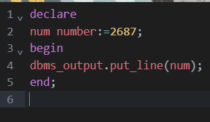
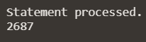
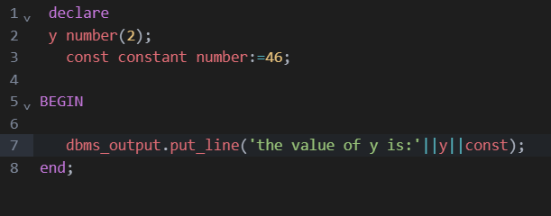
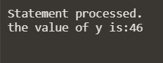
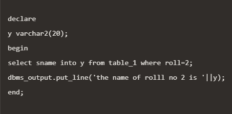

our bca practical is here
here you can see our programming

our bca practical is here
here you can see our programming
1 variables
In PL/SQL, a variable is a meaningful name for a memory location. A variable holds a value that can be changed through the block or
function. A variable is always associated with a particular data type. Before using a variable, you must declare it in the declaration
section of the PostgreSQL Block. The following illustrates the syntax of declaring a variable.
Syntax: variable_name data_type [:= expression];
EXAMPLES:-
INPUT:-

OUTPUT:-

2. CONSTANT
A constant is a value used in a PL/SQL block that remains unchanged throughout the program. It is a user-defined literal value. It can
be declared and used instead of actual values.
Let's take an example to explain it well:
syntax:-
constant_name CONSTANT datatype := VALUE;
Constant_name:it is the name of constant just like variable name. The constant word is a reserved word and its value does not change.
VALUE: it is a value which is assigned to a constant when it is declared. It can not be assigned later.
input

output:-

3. fetch data from table
it is used to fetching data from the table
Let's take an example to explain it well:
syntax:-
SELECT select_list INTO variable_list FROM table_name WHERE condition;
input

output:-